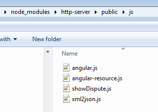

This tutorial describes the steps to mash up Angular based UI into the Stardust Portal. It describes how to ensure that data entered on the Angular UI is saved in the Stardust data and the Stardust data can be read and displayed in the Angular UI mashed up in the Stardust Portal.
You can import the example model and code provided by Stardust. Therefore download the following ZIP file containing the UI Mashup example model as well as the required HTML and JavaScript code:
You find the sources for this tutorial in the mashup folder of the ZIP file.
The following instruction shows how to prepare the UI Mashup Example environment by using the sources provided in the downloaded ZIP file:
npm install http-serverThis creates a new folder
node_modules and performs a local install of an
http-server in the external Web application project folder.node_modules/http-server/public and create a folder
called js.angular.js (tested with 1.3.14)angular-resource.js (tested with 1.3.14)xml2json.js (tested with 1.1.5)showDispute.js (attached)
To learn more about angular go to http://docs.angularjs.org/tutorial/showDispute.html page from the example ZIP file to the
node_modules/http-server/public folder.
web.xml file and
add the following entry for the CorsFilter:
<filter>
<filter-name>CorsFilter</filter-name>
<filter-class>org.apache.catalina.filters.CorsFilter</filter-class>
<init-param>
<param-name>cors.allowed.origins</param-name>
<param-value>*</param-value>
</init-param>
<init-param>
<param-name>cors.allowed.methods</param-name>
<param-value>GET,POST,HEAD,OPTIONS,PUT</param-value>
</init-param>
<init-param>
<param-name>cors.allowed.headers</param-name>
<param-value>Content-Type,X-Requested-With,accept,Origin,Access-Control-Request-Method,Access-Control-Request-Headers</param-value>
</init-param>
<init-param>
<param-name>cors.exposed.headers</param-name>
<param-value>Access-Control-Allow-Origin,Access-Control-Allow-Credentials</param-value>
</init-param>
<init-param>
<param-name>cors.support.credentials</param-name>
<param-value>true</param-value>
</init-param>
<init-param>
<param-name>cors.preflight.maxage</param-name>
<param-value>10</param-value>
</init-param>
</filter>
<filter-mapping>
<filter-name>CorsFilter</filter-name>
<url-pattern>/*</url-pattern>
</filter-mapping>
Ensure that it is listed as the last filter!http://localhost:8000/showDispute.html. Change this URL if you
are running your http server on a different host or port.The resources in the ZIP file provide code to mash up angular UI that will exhibit the reading and writing of data to Stardust data.
If there is already data present in an Stardust data element that the mashed up UI relates to, it will read that data from Stardust over a RESTFUL service, show it in itself and allows editing as well. Once the data is edited and the Save and Complete button is clicked, it will write the edited data back to the Stardust data element by calling another RESTFUL service of Stardust.
Styling is provided in a way that the background color in the input field should change to light green in case the entry is valid and to pink if the entry is invalid.
<html ng-app="ippUIMashup">
<head>
<style>
div.ex {
width: 768px;
padding: 10px;
border: 2px solid gray;
margin-left: 10px;
border-style: outset;
}
.css-form input.ng-invalid.ng-dirty {
background-color: pink;
}
.css-form input.ng-pattern.ng-dirty {
background-color: blue;
}
.css-form input.ng-valid.ng-dirty {
background-color: lightgreen;
}
.fourBy20 {
width: 250px;
height: 35px;
}
</style>
<script type="text/javascript">
var urlParam = function(name) {
var results = new RegExp('[\\?&]' + name + '=([^&#]*)').exec(window.location.href);
if (!results) {
return 0;
}
return results[1] || 0;
};
var processPortalClient = function() {
var url = urlParam('ippPortalBaseUri') + "/plugins/processportal/IppProcessPortalClient.js";
console.log("url: " + url);
if (url) {
var script = document.querySelector("script[src*='" + url + "']");
if (!script) {
var heads = document.getElementsByTagName("head");
if (heads && heads.length) {
var head = heads[0];
if (head) {
script = document.createElement('script');
script.setAttribute('src', url);
script.setAttribute('type', "text/javascript");
//if (charset) script.setAttribute('charset', charset);
head.appendChild(script);
}
}
}
return script;
}
}
</script>
<script src="js/angular.js">
</script>
<script src="js/angular-resource.js">
</script>
<script src="js/xml2json.js">
</script>
<script src="js/showDispute.js">
</script>
</head>
<body ng-controller="disputeCtrl" onload="processPortalClient()">
<div ng-form name="masterForm" class="css-form">
<div class="ex">
Dispute ID
<input type="text" ng-model="Dispute.disputeID" ng-disabled="true">
<br/>
<br/> Dispute Description
<textarea ng-class="{fourBy20: true}" ng-Model="Dispute.description" name="remarks" type="text" ng-maxlength="50"></textarea>
<br/>
<br/>
<button ng-click="saveDispute()">Save and Submit</button>
</div>
</div>
</body>
</html>
'use strict'
var ippUIMashup = angular.module('ippUIMashup', ['ngResource']);
ippUIMashup.config(['$httpProvider', function($httpProvider) {
$httpProvider.defaults.useXDomain = true;
$httpProvider.defaults.headers.put['Content-Type'] = 'application/xml';
}]);
ippUIMashup.controller('disputeCtrl', ['$scope', '$http', '$window',
function($scope, $http, $window) {
$scope.$window = $window;
$scope.Dispute = {};
$scope.MemberData = {};
var x2js = new X2JS();
$scope.urlParam = function(name) {
var results = new RegExp('[\\?&]' + name + '=([^&#]*)').exec(window.location.href);
if (!results) {
return 0;
}
return results[1] || 0;
}
$scope.saveDispute = function() {
var disputeData = "<?xml version=\"1.0\" encoding=\"UTF-8\"?><Dispute>" + x2js.json2xml_str($scope.Dispute) + "</Dispute>";
console.log("Dispute to Submit: " + disputeData);
/*This section of scripts write data back to Stardust from $scope disputeData*/
var res1 = $scope.callbackURL + '/outData/Dispute';
$http.put(res1, disputeData).
success(function(data, status, headers, config) {
console.log("Success");
$scope.sleep(3000);
IppProcessPortalClient.completeActivity();
}).
error(function(data, status, headers, config) {
$scope.error = true;
console.log("Error");
});
}
/**
* Delay for a number of milliseconds
*/
$scope.sleep = function(delay) {
var start = new Date().getTime();
while (new Date().getTime() < start + delay);
}
$scope.sleep(1000);
$scope.callbackURL = $scope.urlParam("ippInteractionUri");
//To ensure that $resource maintains port no.
if ($scope.callbackURL) {
$scope.callbackURL = $scope.callbackURL.replace("\\", "");
}
console.log($scope.callbackURL);
/*This section of scripts fetches data from Stardust and set it to $scope data*/
var res2 = $scope.callbackURL + '/inData/Dispute';
$http.get(res2).
success(function(data, status, headers, config) {
console.log("Data is:" + data);
var json = x2js.xml_str2json(data);
console.log("JSON Data is:" + json.Dispute.disputeID);
$scope.Dispute.disputeID = json.Dispute.disputeID;
$scope.Dispute.description = json.Dispute.description;
}).
error(function(data, status, headers, config) {
$scope.error = true;
});
}
]);
The provided UIMashupModel.xpdl model has the following elements:
The structured type has the fields disputeID and description as shown in the following screenshot:
Figure: Structured Type for Dispute
The UI Mashup application has a parameter Dispute with In/Out direction and structured data Dispute. You can see this parameter in the Parameters tab of the properties page of the application.
Figure: UI Mashup Parameter
In the Configuration tab you see the added URL http://localhost:8000/app/showDispute.html.
Figure: URL configuration
A Message Transformation application serves to add default values to the Dispute data. In the Configuration tab of the property page of the Message Transformation, you find the default values mapped to the Dispute elements.
Figure: Mapping values of the Message Transformation
The process contains the following elements:
Figure: Completed Process
Now we will start both Web servers and check whether the Stardust UI Mashup application is able to mashup both UIs and read and write back data.
Go to folder http-server and execute the command
node ./bin/http-server -a 0.0.0.0 -p 8000
This will start up the http server and listens for connections on port 8000.
Figure: Starting the HTTP server
You can check if is running by accessing http://localhost:8000/showDispute.html. The page should look similar to the following:
Figure: Angular UI Test
Switch to the Workflow Execution perspective and start the process.
Figure: Start the process
The mashed up Angular UI is displayed with the default values given by the Message Transformation application in the Stardust data, fetched over the Stardust RESTFUL service. Change a value and click the Save and Submit button.
Figure: Edit the data
The Stardust RESTFUL service writes the data back to the Stardust data element. The activity completes and the manual task is opening displaying the edited data.
Figure: Manual Task displaying the edited data
Now we successfully read and wrote data from Angular based UI from and to Stardust!